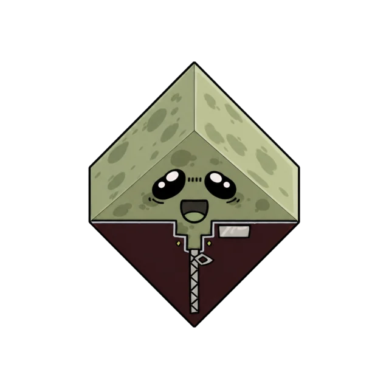
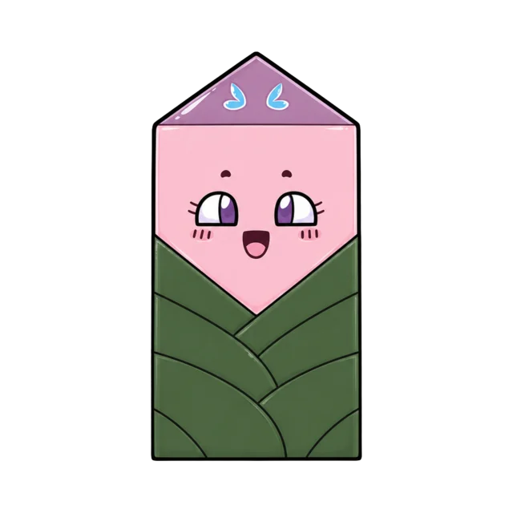
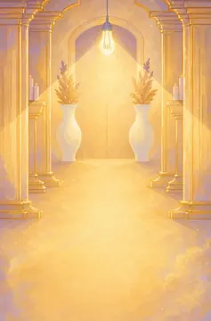

Ball is God?! Rotiți turnul. Deveniți impactul.
O arcade de coborâre verticală hardcore în care tracțiunea orizontală rotește turnul în jurul JETONULUI Espa care căde. Sari peste aterizări sigure, încarcă un combo smash și străbate o lume mitică în care o lovitură nepăzită pune capăt alergării.
Producție activă: zece scene de locații, șefi, dialoguri ramificate și trasee de karma care schimbă regulile jocului.
Rotițitrageți turnul în jurul lui Espa
Riscsăriți peste trei aterizări sigure
Smashstrăpungeți platforma
În versiunea actuală
Karma se schimbă mai mult decât dialogul.
Traseele de karma luminos, neutru și întunecat schimbă comportamentul scutului, avertizările, agresivitatea inamicilor și fazele bossilor, așa că povestea schimbă felul în care jucați.
Starea versiunii Producție activăToate cele zece lumi de dialog
Fundaluri de dialog pentru toate cele zece lumi, în ordinea coborârii, de la Ena la Deka.


UI de producție actual
Selecția nivelului, dialogurile și ecranele de rezultat din versiunea curentă.
Acesta este fluxul actual, în ordinea în care îl întâlniți: selecția nivelului, dialogul, o alegere importantă, apoi ecranul de victorie sau un ecran separat de înfrângere. Fiecare imagine de mai jos folosește grafică din proiectul de producție Unity.
Ruta cerească selectează nivelurile generate în zece capitole cu 100 de niveluri.
Meniul de producție mapează zece locații în capitole de 100 de niveluri și se deschide direct în runda selectată.

Dialogul are loc chiar în locație.
Portretul personajului, grafica locației și plăcuța cu numele vorbitorului împart același cadru vertical.


Shash
Continuați, atunci, dar să nu credeți că va fi ușor. TriaTe așteaptă, ceea ce va face ca totul înainte să pară un simplu fleac.
04 / Alegere-cheie
Răspunsul devine parte a coborârii.
La nivelurile locale 90 și 100, panoul dedicat solicită o decizie de rezervă sau de ucidere înainte ca dialogul să rezolve alergarea.

Cruțați
Ucideți
05 / Meniuri de rezultate
Victoria duce mai departe. Înfrângerea readuce la aceeași provocare.
Versiunea curentă are două stări de rezultat separate: PanelWin oferă reluare și următorul nivel, în timp ce PanelOver păstrează o acțiune de reluare inconfundabilă.
Victorie · PanelWin
Coborâre încheiată
 Reluare
Următorul
Reluare
Următorul
Reluare
Următorul
Personaje din dialog
Fețe întâlnite la coborâre.
Toate cele 25 de caractere cu perechi de portrete deschise și închise de producție valide sunt incluse mai jos. Treceți cu mouse-ul sau focalizați un card pentru a schimba expresia.








Prezentare generală a jocului
Ball is God?! este un joc arcade hardcore despre căderea printr-un turn rotativ.
Ideea
Călăuziți-l pe Espa în josul unui turn divin. O singură greșeală poate pune capăt rundei, iar alegerile voastre majore schimbă felul în care funcționează lumea.
Versiunea actuală
Sunt implementate zece scene de locație, generarea unui turn procedural, combo smash, glisare scut, configurații de șef, dialog de ramificare, meniuri de producție și portrete gata de exprimare.
Audiență
Jucători cărora le plac arcade-urile mobile dificile, ritmul de risc și recompensă și bossii, cu o poveste de urmărit.
Stare
Producție activă. Munca recentă acoperă sistemele de rulare, grafica lumilor, testarea și modul în care se joacă pe telefon.
Caracteristici
Ce faceți în Ball is God?!
Coborâre cu rotire prin tragere
Tragerea orizontală rotește turnul în jurul Espa care căde automat, aliniind golurile, pericolele și platformele sigure.
Presiune de arcade hardcore
O singură lovitură neprotejată pune capăt rundei, așa că trebuie să citiți turnul și să cronometrați fiecare mișcare.
Bossi și lumi mitice
Zece scene de locații, fiecare cu proprii șefi, duc povestea de la o lume la alta.
Alegeri care schimbă regulile
Îndurarea, forța și karma schimbă dialogul, regulile scutului, agresiunea inamicului, telegrafele și fazele șefului.
Buclă de joc
Cum se joacă Ball is God?!
- Pasul 01Citiți coborârea
Cercetați următoarele platforme, goluri și pericole și căutați momente sigure de acțiune în timp ce cădeți.
- Pasul 02Rotiți turnul
Tragerea orizontală transformă lumea în jurul Espa, aliniind o platformă sigură sau un decalaj deliberat.
- Pasul 03Risc și smash
Omite trei platforme pentru a încărca un combo smash, apoi sparge structuri în timp ce scutul acoperă o greșeală letală.
- Pasul 04Alegeți consecința
Mila și forța modelează karma, dialogul și regulile de joc aduse în inamici și șefi.
Poveste / lume
Un turn mitic în care alegerile voastre coboară odată cu voi.
Ball is God?! a început dintr-o fascinație din copilărie pentru arcadele mobile cu coborâre verticală: citind goluri, reacționând rapid și supraviețuind prin instinct.
Formatul putea duce mai mult: șefi, personaje cu personalitate, o poveste și tensiune morală. Proiectul actual îl urmărește pe Espa prin zece scene de locații și un grup de personaje ciudate, cu alegeri care schimbă atât povestea, cât și jocul.
Așa că ținta a devenit o arcade simplă cu coborâre verticală, cu presiunea unei lupte cu șeful și consecințele unui RPG bazat pe poveste.
- Viziune
- O arcade cu turn rotativ și o poveste mitică
- Sfera actuală a lumii
- Zece locații și configurații de boss
- Etapa poveștii
- Ciornă completă de poveste în formă lungă
- Starea producției
- Producție activă
Pe scurt
Controale simple prin tragere, cu o poveste care schimbă regulile.
Controlul prin tragere pentru rotire este imediat. Restul vine din lumile mitice, din șefi și din alegerile care schimbă jocul.
Versiunea curentă combină deja generarea deterministă a turnului, loviturile de risc și recompensă, eșecul la o singură lovitură, bossii, dialogurile ramificate și karma care schimbă jocul.
- Gen
- Arcade cu coborâre verticală și poveste
- Platformă țintă
- iOS / Android
- Formatul sesiunii
- Runde rapide bazate pe abilități
- Studio
- WillowinWorlds
Descărcați materiale
Ball is God?! materiale de presă și creatori
Previzualizări WebP pentru acoperirea în presă, evaluarea de către editori și trimiterile din paginile magazinelor. Fișierele sursă în rezoluție completă sunt disponibile la cerere.
Marca și personajele
Pictograma jocului plus toate cele 25 de personaje actuale care au portrete complete de dialog de producție. Numele se potrivesc cu cheile de localizare Unity.
EspaPortretul personajului jucătorului.
RevlaPortret de dialog din producție.
ShashPortret de dialog din producție.
ShushPortret de dialog din producție.
ShishPortret de dialog din producție.
GigoPortret de dialog din producție.
GogaPortret de dialog din producție.
GigaPortret de dialog din producție.
AskoldPortret de dialog din producție.
MirasPortret de dialog din producție.
HihPortret de dialog din producție.
HehPortret de dialog din producție.
HahPortret de dialog din producție.
MusyaPortret de dialog din producție.
DusyaPortret de dialog din producție.
SusyaPortret de dialog din producție.
VladusPortret de dialog din producție.
FrishaPortret de dialog din producție.
LurenPortret de dialog din producție.
KurenPortret de dialog din producție.
Don YagonPortret de dialog din producție.
LuryaPortret de dialog din producție.
KhleyaPortret de dialog din producție.
VaronPortret de dialog din producție.
WhitePortret de dialog din producție.
Fundaluri de meniu
Opera de producție curentă utilizată de sistemul de selecție a nivelului ceresc.
 Meniu celest
Meniu celest

Lumi de coborâre verticală
Set complet de zece fundaluri ale locației curente, comandate de la Ena la Deka.
 01 · Lumea ceruluiFundal de coborâre verticală Ena.
01 · Lumea ceruluiFundal de coborâre verticală Ena.
 02 · Lumea spațialăFundal de coborâre verticală Dyo.
02 · Lumea spațialăFundal de coborâre verticală Dyo.
 03 · Lumea furtuniiFundal de coborâre verticală Tria.
03 · Lumea furtuniiFundal de coborâre verticală Tria.
 04 · Lumea zăpeziiFundal de coborâre verticală Tessera.
04 · Lumea zăpeziiFundal de coborâre verticală Tessera.
 05 · Lumea vulcanilorFundal Pente; animat în joc.
05 · Lumea vulcanilorFundal Pente; animat în joc.
 06 · Lumea oceanicăFundal de coborâre verticală Eksi.
06 · Lumea oceanicăFundal de coborâre verticală Eksi.
 07 · Lumea deșertuluiFundal de coborâre verticală Epta.
07 · Lumea deșertuluiFundal de coborâre verticală Epta.
 08 · Lumea păduriiFundal de coborâre verticală Ohto.
08 · Lumea păduriiFundal de coborâre verticală Ohto.
 09 · Lumea peșterilorFundal de coborâre verticală Ennea.
09 · Lumea peșterilorFundal de coborâre verticală Ennea.
 10 · Lumea iaduluiFundal de coborâre verticală Deka.
10 · Lumea iaduluiFundal de coborâre verticală Deka.
Fundaluri arcade cu poveste
Set complet de locații de dialog: Sala Luminii plus fundaluri pentru toate cele zece lumi.


00 · Sala LuminiiFundal pentru dialogul de deschidere. 01 · Dialogul ceruluiFundal de poveste Ena.
01 · Dialogul ceruluiFundal de poveste Ena.
 02 · Dialogul spațiuluiFundal de poveste Dyo.
02 · Dialogul spațiuluiFundal de poveste Dyo.
 03 · Dialogul furtuniiFundal de poveste Tria.
03 · Dialogul furtuniiFundal de poveste Tria.
 04 · Dialogul zăpeziiFundal de poveste Tessera.
04 · Dialogul zăpeziiFundal de poveste Tessera.
 05 · Dialogul vulcanuluiFundal de poveste Pente.
05 · Dialogul vulcanuluiFundal de poveste Pente.
 06 · Dialogul oceanuluiFundal de poveste Eksi.
06 · Dialogul oceanuluiFundal de poveste Eksi.
 07 · Dialogul deșertuluiFundal de poveste Epta.
07 · Dialogul deșertuluiFundal de poveste Epta.
 08 · Dialogul păduriiFundal de poveste Ohto.
08 · Dialogul păduriiFundal de poveste Ohto.
 09 · Dialogul peșteriiFundal de poveste Ennea.
09 · Dialogul peșteriiFundal de poveste Ennea.
 10 · Dialogul iaduluiFundal de poveste Deka.
10 · Dialogul iaduluiFundal de poveste Deka.
Întrebări frecvente Ball is God?!
Întrebări frecvente despre Ball is God?!
Ce fel de joc este Ball is God?!
O arcade hardcore cu coborâre verticală. Rotiți un turn în jurul lui Espa, care cade, săriți peste aterizările sigure ca să încărcați loviturile și vă croiți drum prin lumi mitice.
Cum se joacă Ball is God?!
Trageți pe orizontală pentru a roti turnul, sări peste trei platforme pentru a încărca o lovitură și glisați vertical când scutul de răcire trebuie să absoarbă o lovitură letală.
A apărut deja Ball is God?!
Încă nu. Este în producție activă: sisteme de rulare, grafica lumilor, conținut de poveste și testare. Nu există o dată publică de lansare. Platformele țintă sunt iOS și Android.
Prin ce se deosebește Ball is God?!
Îmbină presiunea arcade de risc și recompensă cu zece locații și o karma care schimbă dialogurile, inamicii, avertizările, scuturile și bossii.
Cine face Ball is God?!
WillowinWorlds, un studio independent care face jocuri mobile de puzzle și arcade.
Pot folosi materialele de presă pentru Ball is God?!
Da, pentru presă, evaluarea de către editori și trimiteri din magazine. Fișierele sursă rămân private, cu excepția cazului în care ni le cereți.
Ball is God?! Devlog
Ce s-a schimbat și când
- Suprafețele lumii și validarea pericolelor
Prezentarea personajelor, generarea deterministă și pericolele cu spini au trecut printr-o verificare vizuală și de validare comună.
- iulie 2026Finisarea UI-ului și a personajelor
Selecția nivelului, comenzile de acțiune comune, încadrarea verticală a dialogurilor și expresiile asociate ale personajelor sunt acum gata.
- februarie 2026Revizuirea sferei proiectului
Echipa a finalizat o trecere majoră de integrare a poveștii și a revizuit întreaga amploare a proiectului: zece lumi, alegeri morale, șefi și finaluri multiple.
- aprilie-mai 2025Rescrierea poveștii și abilități
Povestea completă a fost rescrisă, abilitățile personajului au fost îmbunătățite și consecințele morale au devenit mai clare.
- august 2024Începe direcția poveștii
Echipa a hotărât că Ball is God?! trebuie să fie mai mult decât o simplă arcade cu coborâre și a adăugat o poveste mitică și o viziune bazată pe alegeri morale.
- iulie 2024Concept original
Proiectul a început ca prima idee de joc a studioului: o arcade verticală rapidă despre căderea printr-un turn divin.
- Versiunea actualăArcade și poveste într-o singură versiune
Coborârea pe turnul rotativ, combo smash-ul, scutul activat prin glisare, bossii, dialogurile și karma funcționează acum împreună într-o singură versiune.